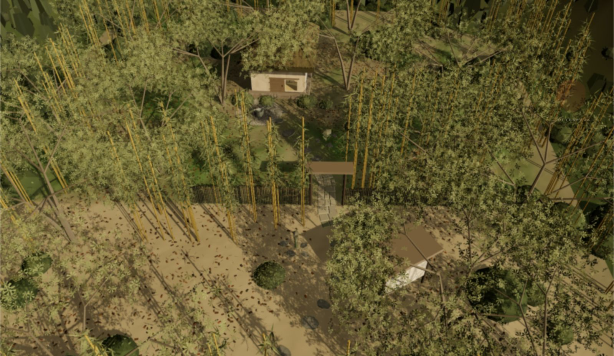

- wa harmony
- kei respect
- sei purity
- jaku tranquillity
Chanoyu, literally hot water for tea, is the preparation and serving of powdered green tea to guests. Its present form derives from Sen no Rikyu, 1522 to 1591. Three schools descend from his grandson Sotan: Omotesenke, Urasenke and Mushakojisenke. This site follows Urasenke.
A gathering has a fixed order. The guests cross a garden, wait, are called, and enter the room through a door too low to pass upright. The host lays out the utensils, purifies them, makes the tea, serves it, washes and withdraws. Every utensil has one function and a name. The sequence is the temae.
the ceremony
rendered in the browser, in real time

One scene, three ways in. Point at a name to see where it stands in the garden.
rojiThe garden between the outer gate and the tea house: stepping stones, a middle gate, a waiting shelter, and the tsukubai, where the hands and mouth are rinsed. Crossed on foot.
chashitsuThe four and a half mat room, entered directly rather than by the garden. The path remains open on foot.
temaeThe procedure for thin tea, from laying out the utensils to carrying them out, seen from the guest's place. A plays it unattended.
documentation
names, dimensions, arrangements
- 茶室 chashitsuTea rooms are classified by the position of the sunken hearth. Four positions, each in a standard and a reversed layout: eight.
- 点前座 temaezaA plan of the host's place, true to the millimetre. The utensils can be moved; distances are read from the host's knees.
- 道具 doguThe utensils, one at a time, each at its own size.